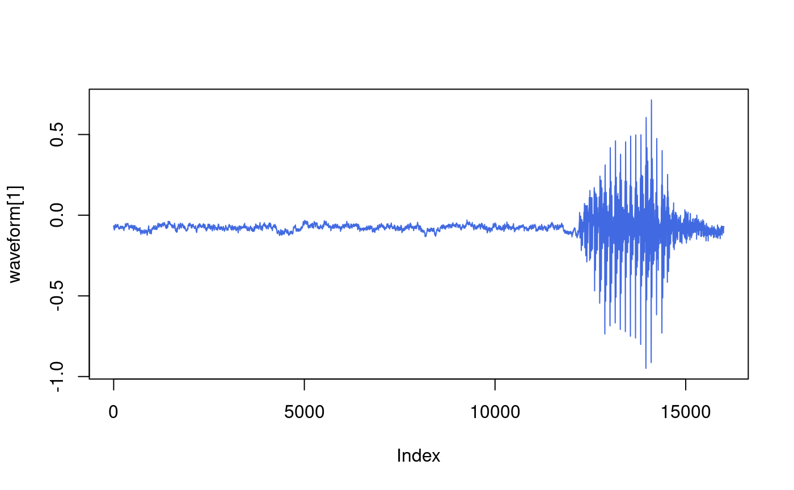
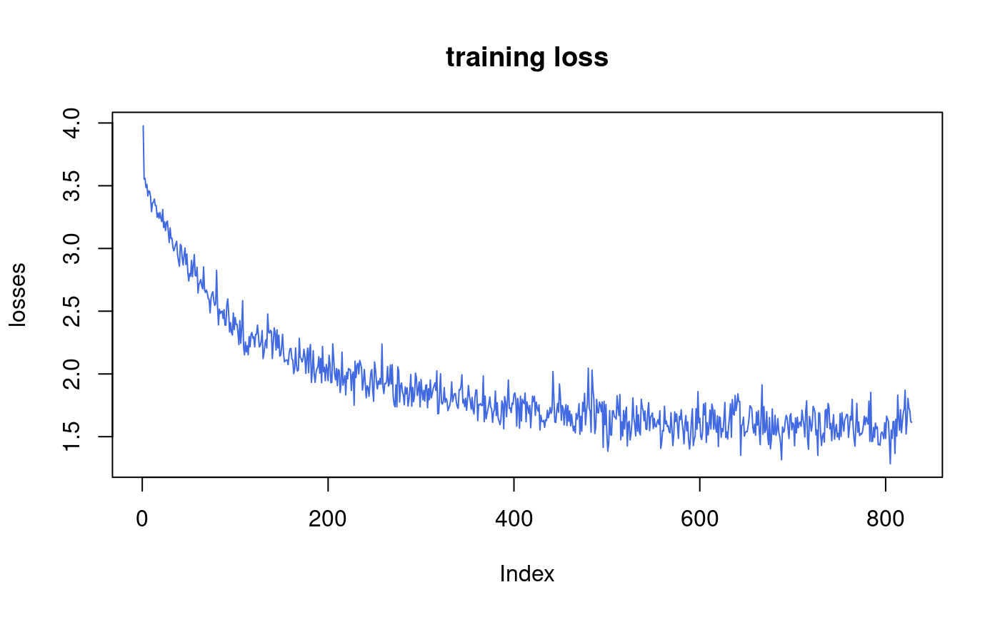

speech_command_recognition_with_torchaudio.RmdNote: This is an R port of the official tutorial available here. All credits goes to Vincent Quenneville-Bélair.
This tutorial will show you how to correctly format an audio dataset and then train/test an audio classifier network on the dataset.
First, let’s import the {torchaudio} package from Github. Not on CRAN yet.
# Uncomment to install {torchaudio} package from Github. Not on CRAN yet.
# remotes::install_github("curso-r/torchaudio")Let’s check if a CUDA GPU is available and select our device. Running the network on a GPU will greatly decrease the training/testing runtime.
device <- torch_device(if (cuda_is_available()) "cuda" else "cpu") device #> torch_device(type='cpu')
We use {torchaudio} to download and represent the dataset. Here we use SpeechCommands, which is a datasets of 35 commands spoken by different people. The dataset speechcommand_dataset() is a torch::dataset() version of the dataset. In this dataset, all audio files are about 1 second long (and so about 16000 time frames long).
The actual loading and formatting steps happen when a data point is being accessed, and {torchaudio} takes care of converting the audio files to tensors. If one wants to load an audio file directly instead, torchaudio_load() can be used. It returns a list containing the newly created tensor along with the sampling frequency of the audio file (16kHz for SpeechCommands).
Going back to the dataset, here we create a subclass that splits it into standard training, validation, testing subsets.
subset_sc <- torch::dataset( "SubsetSC", inherit = speechcommand_dataset, initialize = function(subset = NULL) { super$initialize(".", download = TRUE) load_list <- function(filename) { filepath <- file.path(self$.path, filename) readLines(filepath) } if(subset == "validation") { self$.walker <- paste0(self$.path, "/", load_list("validation_list.txt")) } else if(subset == "testing") { self$.walker <- paste0(self$.path, "/", load_list("testing_list.txt")) } else if(subset == "training") { excludes = c(load_list("validation_list.txt"), load_list("testing_list.txt")) self$.walker <- self$.walker[!self$.walker %in% excludes] } } ) # Create training and testing split of the data. We do not use validation in this tutorial. train_set <- subset_sc("training") test_set <- subset_sc("testing") # sample <- list(waveform, sample_rate, label, speaker_id, utterance_number) sample <- train_set[1] waveform <- sample[[1]] sample_rate <- sample[[2]] label <- sample[[3]] speaker_id <- sample[[4]] utterance_number <- sample[[5]]
A data point in the SPEECHCOMMANDS dataset is a list made of a waveform (the audio signal), the sample rate, the utterance (label), the ID of the speaker, the number of the utterance.
paste("Shape of waveform: ", paste(dim(waveform), collapse = " ")) #> [1] "Shape of waveform: 1 16000" paste("Sample rate of waveform: ", sample_rate) #> [1] "Sample rate of waveform: 16000" plot(waveform[1], type = "l", col = "royalblue")

Let’s find the list of labels available in the dataset.
#> [1] "backward" "bed" "bird" "cat" "dog" "down"
#> [7] "eight" "five" "follow" "forward" "four" "go"
#> [13] "happy" "house" "learn" "left" "marvin" "nine"
#> [19] "no" "off" "on" "one" "right" "seven"
#> [25] "sheila" "six" "stop" "three" "tree" "two"
#> [31] "up" "visual" "wow" "yes" "zero"The 35 audio labels are commands that are said by users. The first few files are people saying “marvin”.
# library(embedr) # for audio player. remotes::install_github("mccarthy-m-g/embedr")
# embed_audio(normalizePath(train_set$.walker[1]))# embed_audio(normalizePath(train_set$.walker[2]))
The last file is someone saying “visual”.
# embed_audio(normalizePath(train_set$.walker[length(train_set)]))
This is a good place to apply transformations to the data. For the waveform, we downsample the audio for faster processing without losing too much of the classification power.
We don’t need to apply other transformations here. It is common for some datasets though to have to reduce the number of channels (say from stereo to mono) by either taking the mean along the channel dimension, or simply keeping only one of the channels.
new_sample_rate <- 8000 transform <- transform_resample(orig_freq = sample_rate, new_freq = new_sample_rate)$to(device = device) transformed <- transform(waveform) # embed_audio(transformed)
We are encoding each word using its index in the list of labels.
label_to_index <- function(word) { # Return the position of the word in labels return(torch::torch_tensor(which(labels == word))) } index_to_label <- function(index) { # Return the word corresponding to the index in labels # This is the inverse of label_to_index return(labels[as.numeric(index$to(device = "cpu"))]) } word_start <- "yes" index <- label_to_index(word_start) word_recovered <- index_to_label(index) paste(word_start, "-->", as.numeric(index), "-->", word_recovered) #> [1] "yes --> 34 --> yes"
To turn a list of data point made of audio recordings and utterances into two batched tensors for the model, we implement a collate function which is used by the torch::dataloader that allows us to iterate over a dataset by batches.
In the collate function, we also apply the resampling, and the text encoding.
pad_sequence <- function(batch) { # Make all tensor in a batch the same length by padding with zeros batch <- sapply(batch, function(x) (x$t())) batch <- torch::nn_utils_rnn_pad_sequence(batch, batch_first = TRUE, padding_value = 0.) return(batch$permute(c(1, 3, 2))) } collate_fn <- function(batch) { # A list has the form: # list of lists: (waveform, sample_rate, label, speaker_id, utterance_number) # Transpose it batch <- purrr::transpose(batch) tensors <- batch$waveform targets <- batch$label # Group the list of tensors into a batched tensor tensors <- pad_sequence(tensors) targets <- sapply(targets, label_to_index) targets <- torch::torch_stack(targets) return(list(tensors = tensors, targets = targets)) } batch_size <- 256 if(device$type == "cuda") { num_workers <- 1 pin_memory <- TRUE } else { num_workers <- 0 pin_memory <- FALSE } train_loader = torch::dataloader( train_set, batch_size = batch_size, shuffle = TRUE, collate_fn = collate_fn, num_workers = num_workers, pin_memory = pin_memory ) test_loader = torch::dataloader( test_set, batch_size = batch_size, shuffle = FALSE, drop_last = FALSE, collate_fn = collate_fn, num_workers = num_workers, pin_memory = pin_memory )
For this tutorial we will use a convolutional neural network to process the raw audio data. Usually more advanced transforms are applied to the audio data, however CNNs can be used to accurately process the raw data. The specific architecture is modeled after the M5 network architecture described in this paper. An important aspect of models processing raw audio data is the receptive field of their first layer’s filters. Our model’s first filter is length 80 so when processing audio sampled at 8kHz the receptive field is around 10ms (and at 4kHz, around 20 ms). This size is similar to speech processing applications that often use receptive fields ranging from 20ms to 40ms.
M5 <- torch::nn_module( "M5", initialize = function(n_input = 1, n_output = 35, stride = 16, n_channel = 32) { self$conv1 = nn_conv1d(n_input, n_channel, kernel_size=80, stride=stride) self$bn1 = nn_batch_norm1d(n_channel) self$pool1 = nn_max_pool1d(4) self$conv2 = nn_conv1d(n_channel, n_channel, kernel_size=3) self$bn2 = nn_batch_norm1d(n_channel) self$pool2 = nn_max_pool1d(4) self$conv3 = nn_conv1d(n_channel, 2 * n_channel, kernel_size=3) self$bn3 = nn_batch_norm1d(2 * n_channel) self$pool3 = nn_max_pool1d(4) self$conv4 = nn_conv1d(2 * n_channel, 2 * n_channel, kernel_size=3) self$bn4 = nn_batch_norm1d(2 * n_channel) self$pool4 = nn_max_pool1d(4) self$fc1 = nn_linear(2 * n_channel, n_output) }, forward = function(x) { x <- x %>% self$conv1() %>% self$bn1() %>% nnf_relu() %>% self$pool1() %>% self$conv2() %>% self$bn2() %>% nnf_relu() %>% self$pool2() %>% self$conv3() %>% self$bn3() %>% nnf_relu() %>% self$pool3() %>% self$conv4() %>% self$bn4() %>% nnf_relu() %>% self$pool4() out <- nnf_avg_pool1d(x, x$shape[length(x$shape)], stride = 1)$permute(c(1, 3, 2)) %>% self$fc1() %>% nnf_log_softmax(dim = 3L) return(out) } ) model <- M5(n_input = transformed$shape[1], n_output = length(labels)) model$to(device = device) str(model$parameters) #> List of 18 #> $ conv1.weight:Float [1:32, 1:1, 1:80] #> $ conv1.bias :Float [1:32] #> $ bn1.weight :Float [1:32] #> $ bn1.bias :Float [1:32] #> $ conv2.weight:Float [1:32, 1:32, 1:3] #> $ conv2.bias :Float [1:32] #> $ bn2.weight :Float [1:32] #> $ bn2.bias :Float [1:32] #> $ conv3.weight:Float [1:64, 1:32, 1:3] #> $ conv3.bias :Float [1:64] #> $ bn3.weight :Float [1:64] #> $ bn3.bias :Float [1:64] #> $ conv4.weight:Float [1:64, 1:64, 1:3] #> $ conv4.bias :Float [1:64] #> $ bn4.weight :Float [1:64] #> $ bn4.bias :Float [1:64] #> $ fc1.weight :Float [1:35, 1:64] #> $ fc1.bias :Float [1:35]
count_parameters <- function(model) { requires <- purrr::map_lgl(model$parameters, ~.$requires_grad) params <- purrr::map_int(model$parameters[requires], ~.$numel()) sum(params) } n <- count_parameters(model) paste("Number of parameters: ", n) #> [1] "Number of parameters: 26915"
We will use the same optimization technique used in the paper, an Adam optimizer with weight decay set to 0.0001. At first, we will train with a learning rate of 0.01, but we will use a scheduler to decrease it to 0.001 during training after 20 epochs.
optimizer <- torch::optim_adam(model$parameters, lr = 0.01, weight_decay = 0.0001) scheduler <- torch::lr_step(optimizer, step_size = 20, gamma = 0.1) # reduce the learning after 20 epochs by a factor of 10
Now let’s define a training function that will feed our training data into the model and perform the backward pass and optimization steps. For training, the loss we will use is the negative log-likelihood. The network will then be tested after each epoch to see how the accuracy varies during the training.
train <- function(model, epoch, log_interval) { model$train() batches <- enumerate(train_loader) for(batch_idx in seq_along(batches)) { batch <- batches[batch_idx][[1]] data <- batch[[1]]$to(device = device) target <- batch[[2]]$to(device = device) # apply transform and model on whole batch directly on device data <- transform(data) output <- model(data) # negative log-likelihood for a tensor of size (batch x 1 x n_output) loss <- nnf_nll_loss(output$squeeze(), target$squeeze()) optimizer$zero_grad() loss$backward() optimizer$step() # update progress bar pbar$tick(tokens = list(loss = loss$item())) # record loss losses <<- c(losses, loss$item()) } }
Now that we have a training function, we need to make one for testing the networks accuracy. We will set the model to eval() mode and then run inference on the test dataset. Calling eval() sets the training variable in all modules in the network to false. Certain layers like batch normalization and dropout layers behave differently during training so this step is crucial for getting correct results.
number_of_correct <- function(pred, target) { # count number of correct predictions return(pred$squeeze()$eq(target)$sum()$item()) } get_likely_index <- function(tensor) { # find most likely label index for each element in the batch return(tensor$argmax(dim=-1L)) } test <- function(model, epoch) { model$eval() correct <- 0 batches <- enumerate(test_loader) for(batch_idx in seq_along(batches)) { batch <- batches[batch_idx][[1]] data <- batch[[1]]$to(device = device) target <- batch[[2]]$to(device = device) # apply transform and model on whole batch directly on device data <- transform(data) output <- model(data) pred <- get_likely_index(output) correct <- correct + number_of_correct(pred, target) # update progress bar pbar$tick() } print(glue::glue(" Test Epoch: {epoch} Accuracy: {correct}/{length(test_loader$dataset)} ({scales::percent(correct / length(test_loader$dataset))})")) }
Finally, we can train and test the network. We will train the network for ten epochs then reduce the learn rate and train for ten more epochs. The network will be tested after each epoch to see how the accuracy varies during the training.
log_interval <- 20 n_epoch <- 5 losses <- c() # The transform needs to live on the same device as the model and the data. transform <- transform$to(device = device) for(epoch in seq.int(n_epoch)) { cat(paste0("Epoch ", epoch, "/", n_epoch, "\n")) pbar <- progress::progress_bar$new(total = (length(train_loader) + length(test_loader)), clear = FALSE, width = 90, incomplete = ".", format = "[:bar] [:current/:total :percent] - ETA: :eta - loss: :loss") train(model, epoch, log_interval) test(model, epoch) scheduler$step() }
Let’s plot the training loss versus the number of iteration.
plot(losses, main = "training loss", type = "l", col = "royalblue")

The network should be more than 65% accurate on the test set after 2 epochs, and 85% after 21 epochs. Let’s look at the last words in the train set, and see how the model did on it.
predict <- function(tensor) { # Use the model to predict the label of the waveform tensor <- tensor$to(device = device) %>% transform() %>% {.$unsqueeze(1L)} %>% model() %>% get_likely_index() %>% {.$squeeze()} %>% index_to_label() return(tensor) } sample <- train_set[2000] print(glue::glue("Expected: {sample[[3]]}. Predicted: {predict(sample[[1]])}.")) #> Expected: bed. Predicted: tree.
In this tutorial, we used {torchaudio} to load a dataset and resample the signal. We have then defined a neural network that we trained to recognize a given command. There are also other data preprocessing methods, such as finding the mel frequency cepstral coefficients (MFCC), that can reduce the size of the dataset. This transform is also available in {torchaudio} as torchaudio::transforms_mfcc.